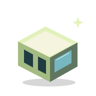
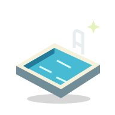

MYLODGE / AT A GLANCE
별장만 있는 곳은 아니니까.
내가 원하는 별장의 하루, 먼저 골라보세요.

주문진 · 양양
바다 곁의 두 가지 라이프스타일.

풀장 & 풀파티
음악과 함께 즐기는 휴가의 장면.
비즈니스 & 만남
관심사가 맞는 이웃과 연결되기.
원스톱 서비스
도착 준비부터 마켓·배달까지.
시설·서비스·교환은 파크별 조성 및 운영 조건에 따라 안내합니다.
01 / TWO WAYS TO STAY
마이롯지의 국내 파크 소개.
바다를 마주한 주문진의 만남. 풀장 곁 양양의 하루. 서로 다른 휴가의 풍경을 만나보세요.

02 / JUMUNJIN PARK
마이롯지 주문진 파크.
바다를 향한 곡선형 별장과 열린 테라스. 풍경과 음악, 대화로 이어지는 만남.

02 / SIGNATURE SCENES
주문진에서 만나는 특별함.

바다 곁에서 만나는 사업가들.
풀파티의 활기와 비즈니스의 열기. 휴가에서 시작되는 새로운 대화.

빛나는 풀파티.
음악과 만남의 풀파티. 카바나에서의 느긋한 휴식.

풍경과 만남이 있는 테라스.
바다를 바라보는 테라스. 함께 앉아 대화하고, 새로운 친구를 만나다.
03 / YANGYANG PARK
마이롯지 양양 파크.
모래해변 곁 파스텔톤 복층 별장. 프라이빗 테라스에서 공용 풀장과 카바나까지.


02 / SIGNATURE SCENES
양양에서 만나는 특별함.

빛나는 풀파티. 다음 기회를 만나는 밤.
세련된 별장과 풀사이드에 모인 사람들. 함께 즐기고, 아이디어와 다음 도전을 나누다.

빛나는 풀파티. 느긋한 카바나.
음악과 만남의 풀파티. 카바나에서의 느긋한 휴식.

반가운 도착. 가벼운 휴가.
가까운 마켓과 세심한 안내. 도착하는 순간부터 편안한 휴가.
PARKS / PRODUCT GUIDE
어느 파크에서, 어떤 별장으로.
지역의 분위기부터 소유 방식과 비용까지. 필요한 조건을 차례로 확인하세요.
JUMUNJIN
파도 소리로 아침을 여는 별장.
조용한 바다 앞 독채에서 쉬고, 테라스에서 늦은 저녁을 나누는 휴가. 주문진의 공간과 섹션·타입을 살펴보세요.
YANGYANG
낮엔 서핑, 밤엔 풀사이드.
혼자만의 독채에서 쉬다가 저녁이면 이웃과 어울리는 단지 생활. 가족 휴가부터 활기찬 교류까지 양양에서 고르세요.
주문진·양양 모두 공간·상품 안내 단계입니다. 현재 화면에 실제 잔여 구좌와 접수 개시일은 게시되지 않았습니다. 파크별 모집 상태 확인 후 신청 경로를 안내합니다.
SECTIONS / YOUR LIFESTYLE
나와 결이 맞는 이웃을 고르세요.
휴가의 목적에 맞춰 섹션의 분위기를 먼저 살펴보세요.
패밀리
아이와 함께 보내는 독립된 휴가.
자세히 보기
아이와 함께 보내는 독립된 휴가. 정원·놀이 동선·조용한 시간대를 확인하세요.
커플·라이프
둘만의 시간을 위한 공간.
자세히 보기
둘만의 시간을 위한 공간. 휴식과 다이닝의 거리를 살펴보세요.
소셜·액티브
새 친구와 풀사이드의 활기.
자세히 보기
새 친구와 풀사이드의 활기. 모임·행사와 객실 구역을 구분해 고르세요.
비즈니스
사업가·전문가와의 교류.
자세히 보기
사업가·전문가와의 교류. 집중 공간과 네트워킹의 동선을 살펴보세요.
웰니스
쉼에 집중하는 선택.
자세히 보기
쉼에 집중하는 선택. 회복·산책·소음 조건을 함께 확인하세요.
섹션은 생활 성향을 설명하는 선택 기준입니다. 파크별 실제 배치·공급 타입·배정은 상품별 안내로 정하며 연령에 따른 입장·이용 제한을 뜻하지 않습니다.
섹션별 구성 예시 보기 — 실제 잔여 재고가 아닙니다.
| 섹션 | 기본형 채수 | 럭셔리형 채수 | 총 구좌 |
|---|---|---|---|
| 소셜·액티브 | 12 | 8 | 2,400 |
| 커플·라이프 | 15 | 10 | 3,000 |
| 패밀리 | 12 | 8 | 2,400 |
| 비즈니스 | 10 | 10 | 2,400 |
| 웰니스 | 11 | 4 | 1,800 |
| 합계 | 60 | 40 | 12,000 |
실제 배분은 운영 설정으로 정합니다. 모집은 빌라별로 판단하며, 120구좌 계약과 1차 입금 확인을 모집 완료 기준으로 삼는 안은 운영 승인 후 적용합니다.
VILLA TYPES / COMPARE
나의 첫 별장. 취향에 맞는 선택.
기본형과 럭셔리형의 가격·권리·포함 항목을 같은 기준으로 비교하세요.
| 비교 항목 | 기본형 | 럭셔리형 |
|---|---|---|
| 구좌 가격 | USD 3,999 | USD 4,149 |
| 옵션 금액 | 기본 조건 | USD 150 포함 · 5차에 납입 |
| 권리·연간 이용 | 1구좌 1/120 · 연 3박 | 1구좌 1/120 · 연 3박 |
| 가구·가전·실내외 사양 | 상품별 포함 품목·규격 확인 | 기본 대비 추가 품목·규격 확인 |
| 이미지와 평면도 | 연출 소품은 포함 품목과 구분 | 디자인 시안과 실제 옵션을 구분 |
독립형 복층 빌라의 외관·실내·테라스 이미지는 공간 콘셉트입니다. 객실별 면적·정원·침실 수·평면도·품목별 규격은 상품 등록 후 안내합니다. 확인되지 않은 가구·가전은 기본 포함으로 표시하지 않습니다.
BEYOND THE VILLA / BUSINESS & LIFE
별장 밖에서 시작되는 새로운 가능성.
함께 즐기고, 생각을 나누고, 다음 도전을 만나는 별장 생활.

IT 협업과 아이디어
노트북을 펼치고 기술과 아이디어를 나누는 시간. 같은 관심사를 가진 동료와 대화를 시작하다.

사업가들의 네트워킹
풀파티와 클럽에서 이어지는 자연스러운 만남. 사업의 경험과 다음 도전을 이야기하다.

자산과 경제를 나누는 대화
사업과 자산 관리, 변화하는 시장에 대한 관심. 서로의 관점과 경험을 나누는 커뮤니티를 그립니다.
04 / SHARED FACILITY CONCEPTS
휴가를 채우는 여섯 가지 공간.
마이롯지가 지향하는 공용 시설을 한곳에서 둘러보세요. 파크별 실제 시설 구성은 확인 후 안내합니다.

비치사이드 · 풀장
바다의 풍경과 물가의 여유.

풀파티 · 카바나
함께 즐기는 음악. 카바나에서의 휴식.

카페테리아 · 클럽
낮의 대화에서 빛나는 밤까지.

테라스
바다를 보며 함께 보내는 시간.

마켓
휴가의 일상에 가까운 편의 공간.

컨시어지
도착부터 편안한 휴가를 위한 안내.
CONCIERGE / ARRIVE LIGHT
필요한 모든 것을, 원스톱 서비스.
가볍게 몸만 오세요. 도착 준비부터 이동과 장보기, 함께 즐기는 저녁까지 연결합니다.
01 / READY
도착하면, 새집처럼.
청소·침구·점검과 도착 세팅을 연결합니다.
자세히 보기
청소·침구·점검과 도착 세팅을 연결합니다. 필요한 준비를 한곳에 요청하는 컨시어지로 휴가의 시작을 가볍게 합니다.
02 / CART
짐과 이동은 카트로.
별장과 공용 공간을 잇는 단지 내 카트.
자세히 보기
별장과 공용 공간을 잇는 단지 내 카트. 1대·1코스 기준 요금 5,000원이며 운행 구역·시간·탑승 조건은 파크별로 안내합니다.
03 / MARKET & DELIVERY
장보기와 배달을 가깝게.
음료·식재료·생활용품은 단지 마켓에서.
자세히 보기
음료·식재료·생활용품은 단지 마켓에서. 별장 앞 배달의 품목·시간·최소 주문·추가 비용을 확인해 이것저것 챙길 짐을 줄입니다.
04 / BARBECUE
바비큐, 함께 나누는 저녁.
테라스와 지정 바비큐 공간에서 식사를 나눕니다.
자세히 보기
테라스와 지정 바비큐 공간에서 식사를 나눕니다. 장비·식재료·준비 지원과 별도 요금, 예약 조건을 함께 안내합니다.
05 / CAMPING
캠핑의 설렘도 함께.
별장 생활 가까이에서 만나는 야외 체험.
자세히 보기
별장 생활 가까이에서 만나는 야외 체험. 설치 장소·장비·준비물·인원·기상 제한을 확인하고 참여합니다.
06 / CAMPFIRE
불빛을 따라, 캠프파이어.
음악과 대화가 이어지는 밤을 그립니다.
자세히 보기
음악과 대화가 이어지는 밤을 그립니다. 지정 장소와 운영 시간·연료·안전 기준은 프로그램별로 안내합니다.
파크별 운영 개시·제공 범위와 예약 방법을 확인한 뒤 이용합니다. 모든 항목이 무료·기본 포함·상시 제공된다는 뜻은 아닙니다. 비용을 먼저 안내해 예상 밖 지출을 줄이는 서비스를 지향합니다.
POOL / BEYOND THE SEASON
365일 풀파티를 향해!
풀장과 풀파티. 따뜻한 물과 음악. 마이롯지 안에서 즐기는 휴가의 선택을 넓힙니다.
SEAWATER / COASTAL PLAN
맑은 물의 흐름을 계획합니다.
해안 파크는 바닷물을 지속 공급하고 수질을 관리하는 풀장 방향을 검토합니다. 공급·여과·위생 기준과 적용 파크는 설비 계획으로 확인합니다.
WARM WATER / GLASS DOME
겨울에도 따뜻하게.
온수와 글래스 돔·온실형 풀장으로 계절의 제약을 줄이는 구상입니다. 실제 시설·운영 계절·시간은 확정 후 안내합니다.
POOL PARTY / MUSIC
풀장, 음악, DJ와 함께.
낮의 카바나에서 저녁의 풀파티로. DJ와 음악, 새로운 만남이 이어지는 프로그램을 준비합니다.
365일 풀파티는 연중 즐길거리를 만들기 위한 계획 방향입니다. 현재 연중 행사 운영·전국 유일·최상의 수질을 보장하는 고지가 아닙니다. 해수 공급 구상은 해안 파크에 해당하며 내륙 치앙마이에 동일 적용하지 않습니다.
OWNER / MORE THAN A STAY
별장의 하루에서, 더 넓은 오너 생활로.
나만의 공간에서 머물고, 함께하는 시간을 즐기고, 다른 지역의 하루를 그립니다. 선택 전에 권리와 이용 조건을 차근히 확인하세요.
01 / SHARE A DAY
소중한 사람에게 별장에서의 하루를.
친구나 지인과 좋은 시간을 나누는 오너 경험을 검토합니다. 선물·대여 범위, 비회원 이용과 오너 동반 여부는 이용 규정 확인 후 안내합니다.
02 / SWAP
익숙한 내 별장, 새로운 지역의 하루.
국내외 다른 파크의 오너와 교환 이용하는 SWAP을 구상합니다. 대상 파크, 이용 일수, 차액·수수료와 배정 방식은 확정 전입니다.
03 / UNDERSTAND YOUR TERMS
가치의 시작은, 명확한 조건에서.
참여 단위와 독립 이용 범위, 권리 기간, 소유 증빙·상속의 적용 범위를 계약 자료로 확인합니다. 가격과 납입 일정도 같은 기준으로 안내합니다.
오너 혜택은 검토 중인 이용 방식입니다. 선물·SWAP·렌트가 현재 제공되는 기능이거나 소유·상속을 일괄 보장한다는 뜻은 아닙니다.